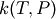
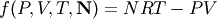
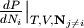
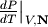
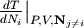
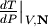
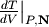
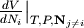
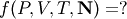
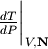

2.9. The rmg.model Module¶
Contains classes for working with the reaction model generated by RMG.
2.9.1. Classes in rmg.model¶
2.9.1.1. CoreEdgeReactionModel¶
- class rmg.model.CoreEdgeReactionModel(core=None, edge=None)¶
Represent a reaction model constructed using a rate-based screening algorithm. The species and reactions in the model itself are called the core; the species and reactions identified as candidates for inclusion in the model are called the edge. The attributes are:
Attribute Description core The species and reactions of the current model core edge The species and reactions of the current model edge absoluteTolerance The absolute tolerance used in the ODE/DAE solver relativeTolerance The relative tolerance used in the ODE/DAE solver fluxToleranceKeepInEdge The relative species flux below which species are discarded from the edge fluxToleranceMoveToCore The relative species flux above which species are moved from the edge to the core fluxToleranceInterrupt The relative species flux above which the simulation will halt maximumEdgeSpecies The maximum number of edge species allowed at any time termination A list of termination targets (i.e TerminationTime and TerminationConversion objects) unirxnNetworks A list of unimolecular reaction networks (unirxn.network.Network objects) networkCount A counter for the number of unirxn networks created - addReactionToCore(rxn)¶
- Add a reaction rxn to the reaction model core (and remove from edge if necessary). This function assumes rxn has already been checked to ensure it is supposed to be a core reaction (i.e. all of its reactants AND all of its products are in the list of core species).
- addReactionToEdge(rxn)¶
- Add a reaction rxn to the reaction model edge. This function assumes rxn has already been checked to ensure it is supposed to be an edge reaction (i.e. all of its reactants OR all of its products are in the list of core species, and the others are in either the core or the edge).
- addReactionToUnimolecularNetworks(newReaction)¶
- Given a newly-created Reaction object newReaction, update the corresponding unimolecular reaction network. If no network exists, a new one is created. If the new reaction is an isomerization that connects two existing networks, the two networks are merged. This function is called whenever a new high-pressure limit edge reaction is created. Returns the network containing the new reaction.
- addSpeciesToCore(spec)¶
- Add a species spec to the reaction model core (and remove from edge if necessary). This function also moves any reactions in the edge that gain core status as a result of this change in status to the core.
- addSpeciesToEdge(spec)¶
- Add a species spec to the reaction model edge.
- enlarge(newObject)¶
- Enlarge a reaction model by processing newObject. If newObject is a rmg.species.Species object, then the species is moved from the edge to the core and reactions generated for that species, reacting with itself and with all other species in the model core. If newObject is a rmg.unirxn.network.Network object, then reactions are generated for the species in the network with the largest leak flux.
- getLists()¶
- Return lists of all of the species and reactions in the core and the edge.
- getReactionRates(T, P, Ci)¶
- Return an array of reaction rates for each reaction in the model core and edge. The core reactions occupy the first rows of the array, while the edge reactions occupy the last rows.
- getStoichiometryMatrix()¶
- Return the stoichiometry matrix for all core and edge species. The rows represent the species in the core and edge in order, while the columns represent the reactions in the core and edge in order.
- initialize(coreSpecies)¶
- Initialize a reaction model with a list coreSpecies of species to start out with.
- loadSeedMechanism(path)¶
- Loads a seed mechanism from the folder indicated by path into the core-edge reaction model.
- removeSpeciesFromEdge(spec)¶
- Remove species spec from the reaction model edge.
- updateUnimolecularReactionNetworks()¶
- Iterate through all of the currently-existing unimolecular reaction networks, updating those that have been marked as invalid. In each update, the phenomonological rate coefficients  are computed for each net reaction in the network, and the resulting reactions added or updated.
2.9.1.2. IdealGas¶
- class rmg.model.IdealGas¶
An equation of state based on the ideal gas approximation

where
 is the total number of moles.
is the total number of moles.The ideal gas approximation is generally valid for gases at low pressures and moderate tempertaures; it does not predict the gas-liquid phase transition and is not applicable to liquids.
- getPressure(T, V, N)¶
- Return the pressure associated with temperature T, volume V, and numbers of moles N.
- getTemperature(P, V, N)¶
- Return the temperature associated with pressure P, volume V, and numbers of moles N.
- getVolume(T, P, N)¶
- Return the volume associated with temperature T, pressure P, and numbers of moles N (which may be a list, in which case it’s summed).
- getdPdNi(P, V, T, N, i)¶
- Return the derivative  evaluated at a given pressure P, volume V, temperature T, and numbers of moles N. The final parameter i is used to determine which species to use; if N is a list, then i is an index, while if N is a dictionary, i is a key.
- getdPdT(P, V, T, N)¶
- Return the derivative  evaluated at a given pressure P, volume V, temperature T, and numbers of moles N.
- getdPdV(P, V, T, N)¶
- Return the derivative
 evaluated at a given pressure P, volume V, temperature T, and
numbers of moles N.
evaluated at a given pressure P, volume V, temperature T, and
numbers of moles N.
- getdTdNi(P, V, T, N, i)¶
- Return the derivative  evaluated at a given pressure P, volume V, temperature T, and numbers of moles N. The final parameter i is the index of the species of interest, corresponding to an index into the list N.
- getdTdP(P, V, T, N)¶
- Return the derivative  evaluated at a given pressure P, volume V, temperature T, and numbers of moles N.
- getdTdV(P, V, T, N)¶
- Return the derivative  evaluated at a given pressure P, volume V, temperature T, and numbers of moles N.
- getdVdNi(P, V, T, N, i)¶
- Return the derivative  evaluated at a given pressure P, volume V, temperature T, and numbers of moles N. The final parameter i is the index of the species of interest, corresponding to an index into the list N.
- getdVdP(P, V, T, N)¶
- Return the derivative
 evaluated at a given pressure P, volume V, temperature T, and
numbers of moles N.
evaluated at a given pressure P, volume V, temperature T, and
numbers of moles N.
- getdVdT(P, V, T, N)¶
- Return the derivative
 evaluated at a given pressure P, volume V, temperature T, and
numbers of moles N.
evaluated at a given pressure P, volume V, temperature T, and
numbers of moles N.
2.9.1.3. IncompressibleLiquid¶
- class rmg.model.IncompressibleLiquid(T=None, P=None, V=None, N=None, Vmol=None)¶
An equation of state for incompressible liquids

where
is the total number of moles.- Initialise with keyword arguments::
- il = IncompressibleLiquid(T=298, P=1E5, V=, N=, Vmol=)
- getPressure(T, V, N)¶
- Return the pressure associated with temperature T, volume V, and numbers of moles N.
- getTemperature(P, V, N)¶
- Return the temperature associated with pressure P, volume V, and numbers of moles N.
- getVolume(T, P, N)¶
- Return the volume associated with temperature T, pressure P, and numbers of moles N (which may be a list, in which case it’s summed).
- getdPdNi(P, V, T, N, i)¶
- Return the derivative evaluated at a given pressure P, volume V, temperature T, and numbers of moles N. The final parameter i is used to determine which species to use; if N is a list, then i is an index, while if N is a dictionary, i is a key.
- getdPdT(P, V, T, N)¶
- Return the derivative evaluated at a given pressure P, volume V, temperature T, and numbers of moles N.
- getdPdV(P, V, T, N)¶
- Return the derivative
evaluated at a given pressure P, volume V, temperature T, and
numbers of moles N.
- getdTdNi(P, V, T, N, i)¶
- Return the derivative evaluated at a given pressure P, volume V, temperature T, and numbers of moles N. The final parameter i is the index of the species of interest, corresponding to an index into the list N.
- getdTdP(P, V, T, N)¶
- Return the derivative  evaluated at a given pressure P, volume V, temperature T, and numbers of moles N.
- getdTdV(P, V, T, N)¶
- Return the derivative evaluated at a given pressure P, volume V, temperature T, and numbers of moles N.
- getdVdNi(P, V, T, N, i)¶
Return the derivative evaluated at a given pressure P, volume V, temperature T, and numbers of moles N. The final parameter i is the index of the species of interest, corresponding to an index into the list N.
For lack of better information, we assume that the partial molar volume of species i is equal to the average molar volume of the mixture as a whole.
- getdVdP(P, V, T, N)¶
- Return the derivative
evaluated at a given pressure P, volume V, temperature T, and
numbers of moles N.
- getdVdT(P, V, T, N)¶
- Return the derivative
evaluated at a given pressure P, volume V, temperature T, and
numbers of moles N.
2.9.1.4. PressureModel¶
- class rmg.model.PressureModel¶
- Represent a pressure profile. Currently the only implemented model is isobaric (constant pressure).
2.9.1.5. ReactionModel¶
- class rmg.model.ReactionModel(species=None, reactions=None)¶
- Represent a generic reaction model. A reaction model consists of species, a list of species, and reactions, a list of reactions.
2.9.1.6. ReactionSystem¶
- class rmg.model.ReactionSystem(temperatureModel=None, pressureModel=None, volumeModel=None, initialConcentration=None)¶
Represent a generic reaction system, e.g. a chemical reactor. A reaction system is defined by a temperature model temperatureModel, a pressure model pressureModel, a volume model volumeModel, and a dictionary of initial and constant concentrations initialConcentration. Only two of temperatureModel, pressureModel, and volumeModel are independent; the remaining one must be set to None.
Each RMG job can handle multiple reaction systems; the resulting model will generally be the union of the models that would have been generated via individual RMG jobs, and will therefore be valid across all reaction systems provided.
- setModels(temperatureModel, pressureModel, volumeModel)¶
- Set any two of the reactor’s temperatureModel, pressureModel or volumeModel. Attempting to set all three to non-None will cause an InvalidReactorModelException to be raised.
2.9.1.7. TemperatureModel¶
- class rmg.model.TemperatureModel¶
- Represent a temperature profile. Currently the only implemented model is isothermal (constant temperature).